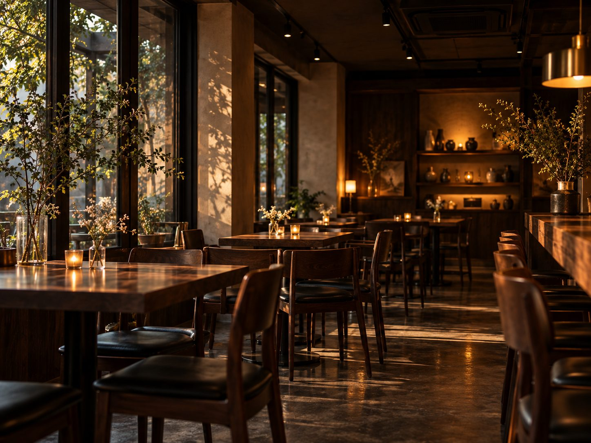
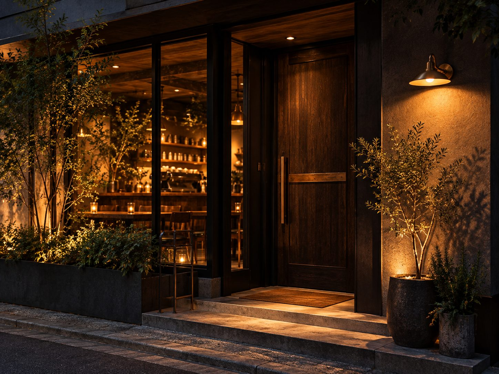

No. 01
Seasonal Pour Over
季節のハンドドリップ
その季節にいちばん美味しい単一農園の豆を、浅めの焙煎でハンドドリップ。果実のような香りが広がります。
¥750〜

Specialty Coffee & Roastery
街の片隅で、
一杯と静かに向き合う時間を。


Concept
ひと息つける、街の片隅を。
「nook」は、英語で“片隅”や“隠れ家のような場所”という意味。にぎやかな通りから一本入ったところに、ゆっくりと深呼吸できる場所をつくりたい。NOOK COFFEE は、そんな思いから生まれた小さなロースタリーカフェです。
産地から届いた生豆を店内で焙煎し、一杯ずつ丁寧に抽出。コーヒーの香りと、静かな時間をお届けします。
Signature
はじめての方に、まず味わってほしい三品。
No. 01
季節のハンドドリップ
その季節にいちばん美味しい単一農園の豆を、浅めの焙煎でハンドドリップ。果実のような香りが広がります。
¥750〜

No. 02
ヌック ブレンド ラテ
深煎りのオリジナルブレンドに、きめ細かくスチームしたミルクを合わせた看板メニュー。
¥700

No. 03
バスクチーズケーキ
香ばしい焼き色と、とろけるような中心。深煎りのコーヒーとよく合う、店内で焼き上げる定番の一品です。
¥600
※ 商品名・価格はすべて架空の設定です（税込表記）。

“Slow down, sip,
and stay a while.”
急がなくていい。一杯ぶんの、ゆっくりした時間を。
News
お知らせ
※ お知らせはすべて架空の内容です。

Visit Us
店舗のご案内
※ 店舗名・住所・営業時間はすべて架空の設定です